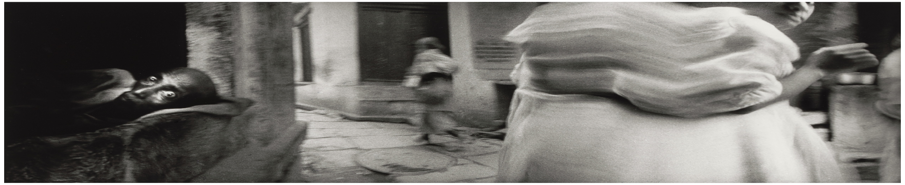

Declarations

Michael Ackerman, Benaras-India (1994)
-
Any reference made to this website, shall strictly be ad hominem only.
-
Personal and contact information of group members, researchers and various other people are shared for professional and academic purposes
only and should not be used otherwise.
-
The scientific views and opinions expressed in this webpage are solely personal and do not necessarily reflect the position of the research groups, funding agencies, or any other entity associated. While this webpage uses logos of various institutes, departments and associations it is an externally owned and run webpage.
-
Any recommendation made through this website are result of prolonged and immersive personal experience of the same. They in no manner are endorsements.
-
This webpage is a deck of HTML and CSS, inspired from the
mnmlist theme by
Leo Babauta, to which its author has released all claims on copyright and has put all the contents into the public domain. No permission is needed to copy, distribute, or modify the content of this or that particular site. Credit is appreciated but not requisite.
-
This webpage uses the following fonts :
-
All artworks on this website are sourced from open-access collections. Additionally, the photographs, unless I am in them, are mine.
back to home